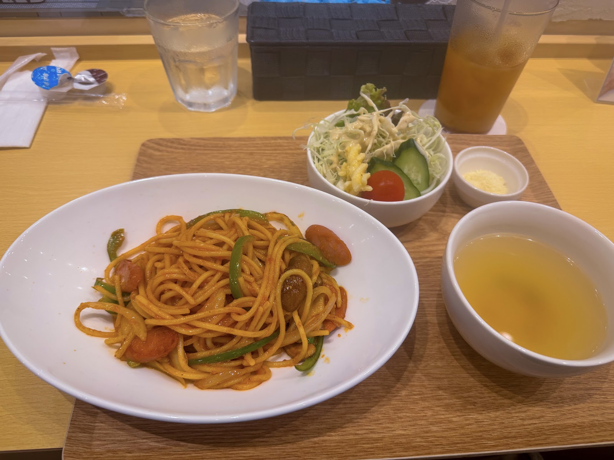
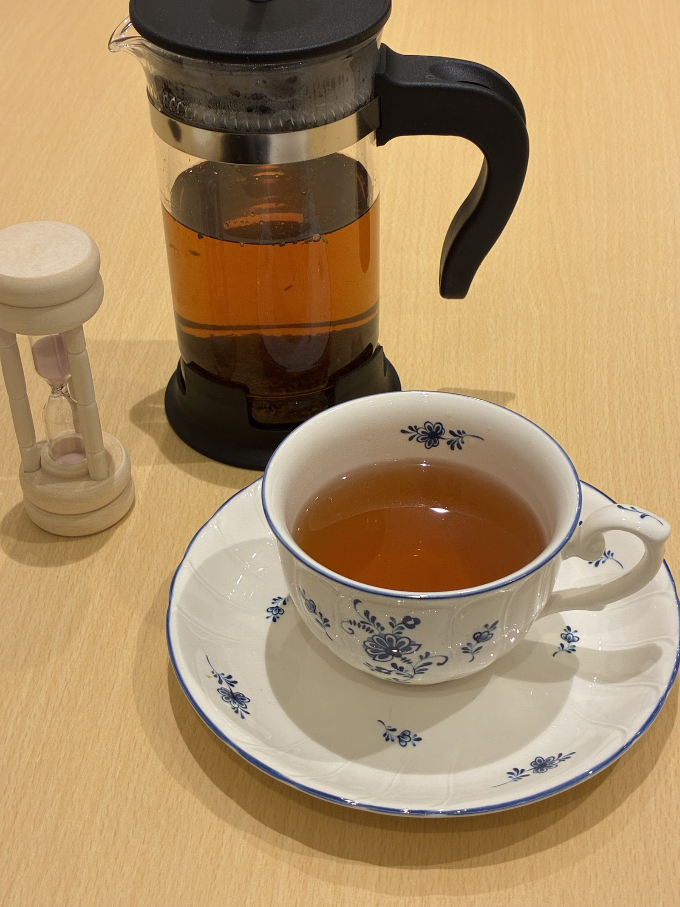
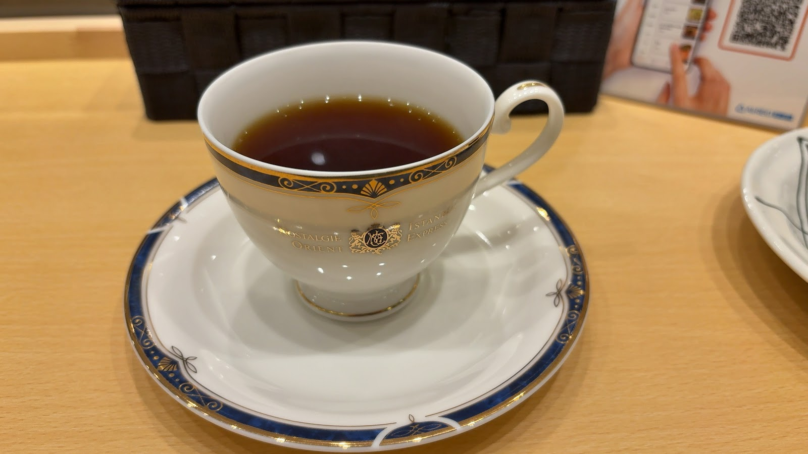
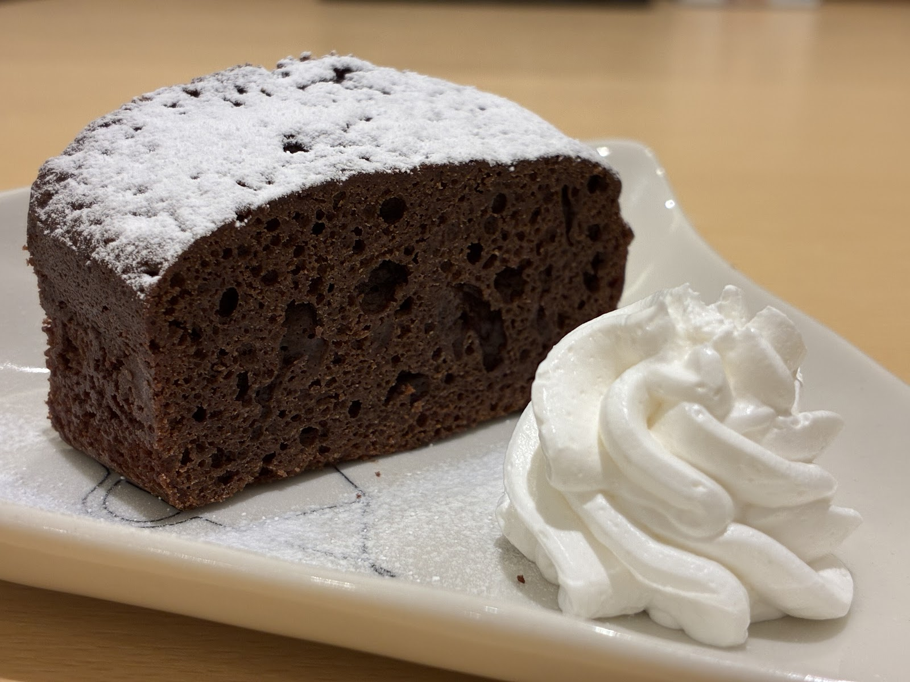

お料理・ドリンク紹介
Photo: まーくん(Google マップ)
カウンターの向こうを走る鉄道模型を眺めながら、お食事や紅茶・コーヒー、焼き菓子などを楽しめる様子がうかがえます。品目・価格の詳細はお電話またはInstagramにてご確認いただけますと幸いです。
01
彩り豊かなワンプレート仕立てのお食事が中心と見受けられます。

お食事の一例
02
フレンチプレスや砂時計を使い、一杯ずつ丁寧に淹れる様子がうかがえます。アンティーク調のカップで味わうひとときも魅力のようです。

紅茶のいれ方の一例
Photo: 鉄道茶房 Ａ列車で いこう(Google マップ)

アンティーク調のカップでのひとときの一例
Photo: Shupa Shupa(Google マップ)
03
パウンドケーキ風の焼き菓子など、ひと休みにぴったりのデザートが楽しめそうです。

デザートの一例
メニュー内容や価格、営業時間は変更になる場合がございます。最新情報はInstagramまたはお電話にてご確認ください。